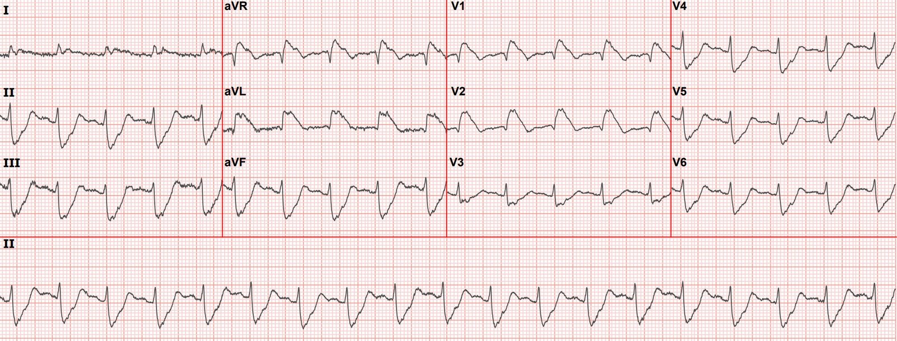
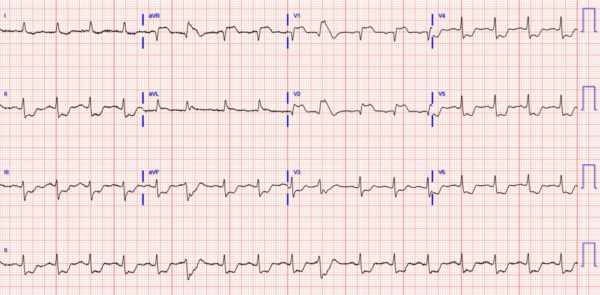
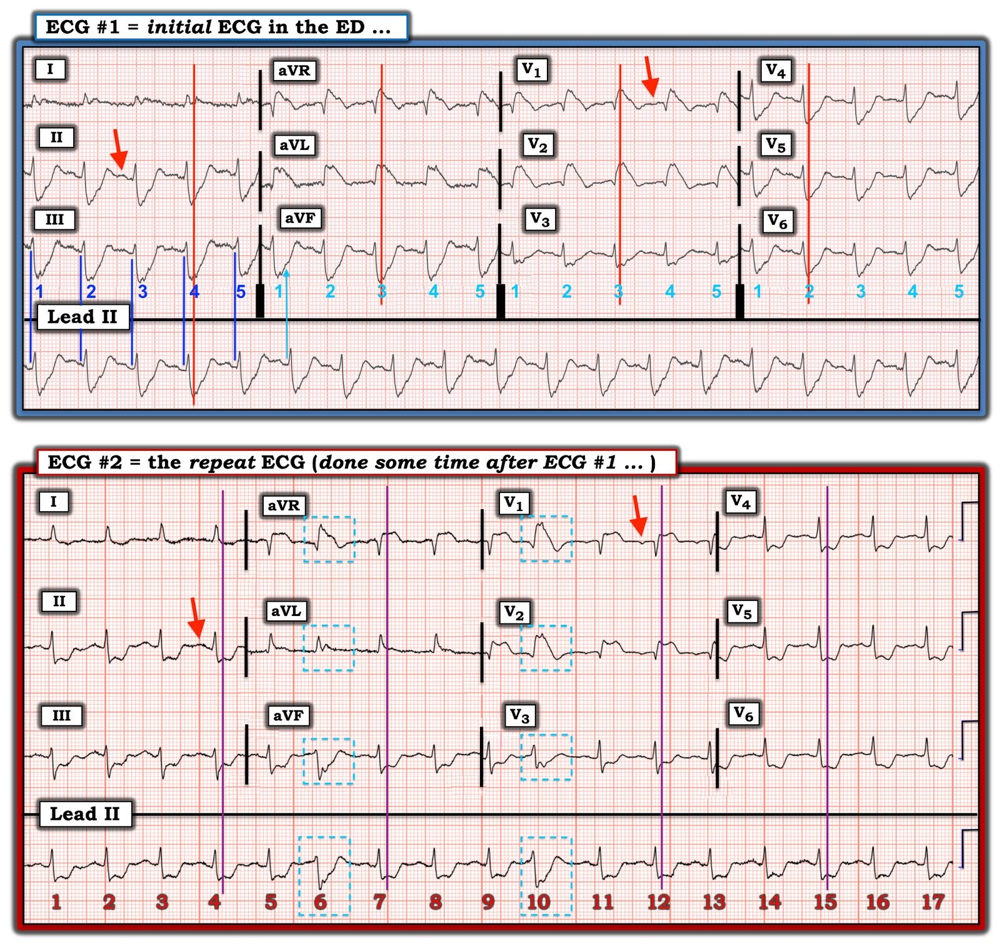

11/11/2022 — Một phụ nữ lớn tuổi nôn cấp, tiền ngất, tụt huyết áp, và phức bộ QRS rộng
Bản dịch tiếng Việt của bài "An elderly woman with acute vomiting, presyncope, and hypotension, and a wide QRS complex" – Dr. Smith’s ECG Blog. Giữ nguyên toàn bộ 4 hình ảnh của bản gốc.
Tác giả: Pendell Meyers
Gia đình của một phụ nữ lớn tuổi có nhiều bệnh đồng mắc đã gọi đội cấp cứu ngoài viện (EMS) khi bà đột ngột bị khó thở, buồn nôn, nôn và gần ngất. Bà tỉnh táo, định hướng tốt và tụt huyết áp, với huyết áp ban đầu 70/50. Đội cấp cứu ngoài viện đã ghi một điện tâm đồ 12 chuyển đạo, như dưới đây:


Đây là nhịp nhanh xoang (đừng để bị đánh lừa mà nghĩ rằng đây là VT hay một nhịp nhanh QRS rộng khác!) Điện tâm đồ này có giá trị chẩn đoán tắc LAD (hoặc thậm chí có thể là tắc thân chung động mạch vành trái), với hình ảnh kinh điển gồm RBBB và LAFB kèm ST chênh lên (STE) đồng hướng rất lớn ở V1-V2, I và aVL, cùng ST chênh xuống soi gương ở hầu hết các chuyển đạo còn lại (và/hoặc một thành phần của hình ảnh thiếu máu cục bộ dưới nội tâm mạc). Đây là hình thái ST "vây cá mập" (shark fin). Với ST chênh xuống (STD) nhiều như vậy ở các chuyển đạo hướng sang trái và hướng xuống dưới V4-V6, II, III và aVF, dĩ nhiên phải có ST chênh lên ở aVR.
Đây là một trong những hình ảnh OMI nguy cơ cao nhất có thể thấy trên điện tâm đồ. Hình ảnh này về cơ bản luôn đi kèm sốc tim và tỷ lệ cao ngừng tim do VT/VF, v.v.
Bệnh nhân đến khoa cấp cứu (ED) trong tình trạng sốc tim nhưng vẫn tỉnh.
Báo động STEMI (Code STEMI) đã được kích hoạt.
Một điện tâm đồ ghi lại được thực hiện:


Vì một tổ hợp lý do, nhiều khả năng bao gồm tuổi tác và tiên lượng, bác sĩ tim mạch đã không muốn đưa bệnh nhân vào phòng thông tim (cath lab). Không chụp mạch vành, và cũng không dùng thuốc tiêu sợi huyết.
Troponin I ban đầu là 87 ng/L. Bốn giờ sau khi đến viện, nồng độ là 17,823 ng/L, và không đo thêm lần nào nữa.
Siêu âm tim khẩn cho thấy EF 25% với giảm động toàn bộ và vô động vùng trước-mỏm.
Bà được chuyển sang chăm sóc giảm nhẹ (comfort care) và tử vong trong vòng 8 giờ kể từ khi khởi phát.
Những điểm cần học:
OMI cấp do LAD hoặc thân chung động mạch vành trái gây RBBB và LAFB kèm ST chênh lên đồng hướng ở các chuyển đạo trước bên là một hình ảnh OMI có nguy cơ cực kỳ cao. Bạn phải hiểu hình dạng QRS và cách tìm điểm J thì mới nhận ra được hình ảnh này.
Hình ảnh OMI và hình ảnh thiếu máu cục bộ dưới nội tâm mạc có thể cùng hiện diện một lúc. Ví dụ, hình ảnh Aslanger là OMI thành dưới đồng thời kèm hình ảnh thiếu máu cục bộ dưới nội tâm mạc.
Các ca OMI LAD khác kèm RBBB/LAFB:
A man in his 40s who really needs you to understand his ECG (Một người đàn ông ngoài 40 tuổi thực sự cần bạn hiểu điện tâm đồ của anh ấy)
Cardiac Arrest at the airport, with an easy but important ECG for everyone to recognize (Ngừng tim ở sân bay, với một điện tâm đồ dễ nhưng quan trọng mà ai cũng cần nhận ra)
A woman in her 60s with 6 hours of chest pain, dyspnea, tachycardia, and hypoxemia (Một phụ nữ ngoài 60 tuổi đau ngực, khó thở, nhịp tim nhanh và giảm oxy máu 6 giờ)
Ventricular Fibrillation, ROSC after perfusion restored by ECMO, then ECG. Protocols can be overridden by Physician Judgment. (Rung thất, tái lập tuần hoàn tự nhiên sau khi tưới máu được khôi phục bằng ECMO, rồi điện tâm đồ. Phác đồ có thể bị gạt sang bên bởi phán đoán của bác sĩ.)
What is the Diagnosis in this 70-something with Chest Pain? (Chẩn đoán là gì ở bệnh nhân 70 mấy tuổi bị đau ngực này?)
68 minutes with chest compressions, full recovery. Plus recommendations from a 5-member panel on cardiac arrest. (68 phút ép tim, hồi phục hoàn toàn. Kèm các khuyến nghị của một hội đồng 5 thành viên về ngừng tim.)
A deadly alcohol binge: a man in his 30s with chest pain and initial high sensitivity troponin I within normal limits (Một cuộc nhậu chết người: người đàn ông ngoài 30 tuổi đau ngực với troponin I độ nhạy cao ban đầu trong giới hạn bình thường)
Wide Complex Tachycardia; It’s really sinus, RBBB + LAFB, and massive ST elevation (Nhịp nhanh QRS rộng; thực ra là nhịp xoang, RBBB + LAFB, và ST chênh lên rất lớn)
Resuscitated from ventricular fibrillation: what is the ECG Diagnosis? (Được hồi sức sau rung thất: chẩn đoán điện tâm đồ là gì?)
A man in his 80s with chest pain (Một người đàn ông ngoài 80 tuổi bị đau ngực)
What, besides large anterior STEMI, is so ominous about this ECG? (Ngoài STEMI thành trước diện rộng, điều gì ở điện tâm đồ này đáng ngại đến vậy?)
Chest Pain and Right Bundle Branch Block (Đau ngực và blốc nhánh phải)
Thông tin trích lại từ bài trước về RBBB và LAFB cấp trong OMI thành trước bên
Một số ca tắc LAD hoặc thân chung động mạch vành trái nặng nhất biểu hiện bằng RBBB và LAFB cấp, và các dấu hiệu này mang nguy cơ cao nhất về rung thất cấp, sốc tim cấp, và tử vong trong viện cao nhất khi được Widimsky và cs. nghiên cứu (tử vong trong viện là 18.8% đối với nhồi máu cơ tim cấp (AMI) chỉ có RBBB mới xuất hiện). Ngoài ra, RBBB và LAFB khiến việc nhận ra điểm J và ST chênh lên khó khăn hơn và dễ bị đọc sai hơn. Khi được tái tưới máu thành công và kịp thời, bệnh nhân có thể hồi phục chức năng của các phân nhánh trước đó bị thiếu máu cục bộ hoặc bị choáng.
Widimsky PW, Rohác F, Stásek J, và cs. Primary angioplasty in acute myocardial infarction with right bundle branch block: should new onset right bundle branch block be added to future guidelines as an indication for reperfusion therapy? Eur Heart J. 2012;33(1):86–95.
https://pubmed.ncbi.nlm.nih.gov/21890488/ (tóm tắt bài báo của Widimsky và cs. trên PubMed)

===================================
BÌNH LUẬN CỦA TÔI, bởi KEN GRAUER, MD (11/11/2020):
===================================
Như Dr. Meyers đã nêu — ca hôm nay liên quan đến một hình ảnh điện tâm đồ quan trọng cần được nhận ra kịp thời. Từ góc độ học thuật — tôi thấy một số dấu hiệu điện tâm đồ tinh tế từ 2 bản ghi trong ca này đặc biệt thú vị.
- Để rõ ràng — tôi đã đặt 2 bản ghi của ca hôm nay cạnh nhau trong Hình 1. Tôi đã đánh dấu các đặc điểm mà tôi nhấn mạnh trong hình này.
- XIN NHẤN MẠNH: Các bình luận của tôi không làm thay đổi những cân nhắc chẩn đoán đã được Dr. Meyers bàn luận rất chi tiết và xuất sắc ở trên. Thay vào đó — tôi tập trung vào một số khái niệm nâng cao trong đọc điện tâm đồ, mà việc nắm được chúng có thể hữu ích trong các ca khác.
CÁC CÂU HỎI ĐỂ SUY NGẪM:
- Nhịp là gì trên điện tâm đồ #1?
- Cả hai bản ghi đều có một dải nhịp dài chuyển đạo II bên dưới 12 chuyển đạo. Nhưng hệ thống ghi dải nhịp chuyển đạo dài có giống nhau trên điện tâm đồ #1 và điện tâm đồ #2 không?
- GỢI Ý: Hãy xem các đường thẳng đứng màu XANH đậm và đường màu XANH nhạt trên điện tâm đồ #1 có (hay không) thẳng hàng với các phức bộ QRS ở chuyển đạo III và aVF.
- QRS trên điện tâm đồ #1 rộng bao nhiêu?
- TẠI SAO các nhát #6 và #10 trên dải nhịp dài chuyển đạo II của điện tâm đồ #2 trông khác với 15 nhát còn lại trên dải nhịp chuyển đạo dài này?
- Vẫn trên điện tâm đồ #2 — Hãy xem nhát #10 trông khác như thế nào ở các chuyển đạo V1,V2,V3 — so với các nhát khác trong những chuyển đạo ghi đồng thời này (tức là, so với các nhát #9, 11, 12, 13 ở các chuyển đạo V1,V2,V3). TẠI SAO lại như vậy?
=============================
LƯU Ý: Lý do tôi tập trung vào những câu hỏi đầy thử thách này — là vì chúng làm nổi bật một số điểm quan trọng liên quan đến việc sử dụng tối ưu các chuyển đạo ghi đồng thời. Dù không quan trọng cho việc ra quyết định trong ca hôm nay — những điểm này có thể tỏ ra vô giá trong chẩn đoán các rối loạn nhịp nhanh và/hoặc các biến đổi ST-T khó đánh giá ở một số ca chọn lọc.
=============================


Nhịp là gì trên điện tâm đồ #1?
Như Dr. Meyers đã nêu — dù có vẻ như QRS giãn rộng rõ rệt, nhịp trên điện tâm đồ #1 không phải là VT. Thay vào đó — các mũi tên ĐỎ chỉ các sóng P xoang trên cả hai bản ghi.
- Biên độ sóng P trên cả hai bản ghi đều nhỏ. Ngoài ra — có những gợn sóng do nhiễu ở đường nền các chuyển đạo chi trên điện tâm đồ #1. Do đó — tôi đã hoàn toàn không chắc chắn mình đang thấy sóng P xoang khi lần đầu nhìn vào chuyển đạo II.
- Tuy vậy — xem xét kỹ các chuyển đạo khác trên điện tâm đồ #1 đã xác nhận nhịp trên bản ghi này đúng là nhịp nhanh xoang (tức là, Ngoài sóng lệch âm nhỏ-nhưng-có-hiện-diện trước mỗi QRS ở chuyển đạo V1 — sóng P xoang cũng thấy được ở các chuyển đạo V4,V5,V6).
- LƯU Ý: Mặc dù có vẻ như nhát thứ 1 sau mỗi lần đổi chuyển đạo trên điện tâm đồ #1 xuất hiện sớm — không hề có PAC nào trên bản ghi này! (Xem bên dưới).
Hệ thống ghi chuyển đạo II dài là khác nhau!
Tôi RẤT THÍCH sử dụng các chuyển đạo ghi đồng thời. Tính năng này vô giá để đánh giá hình dạng QRS trong các nhịp nhanh QRS rộng nhằm phân biệt nhịp SVT với VT.
- Theo ý kiến của tôi — hệ thống tối ưu để đối chiếu các chuyển đạo ghi đồng thời với bản ghi 12 chuyển đạo — là hệ thống được dùng trên điện tâm đồ #2. Có tổng cộng 17 nhát trên dải nhịp dài chuyển đạo II của bản ghi này. Chính 17 nhát này được thấy trên 12 chuyển đạo — với lợi thế là chúng ta thấy 4 nhát đầu tiên ở 3 chuyển đạo ghi đồng thời (tức là, các chuyển đạo I,II,III).
- Sau đó chúng ta thấy các nhát #5-đến-8 ở 4 chuyển đạo ghi đồng thời (tức là, các chuyển đạo aVR,L,F; và chuyển đạo II dài) — các nhát #9-đến-13 ở các chuyển đạo V1,2,3 và II — và các nhát #14-đến-17 ở các chuyển đạo V4,5,6 và II.
BẠN có để ý rằng hệ thống ghi là khác trên điện tâm đồ #1?
- Có tổng cộng 19 nhát trên dải nhịp chuyển đạo dài của điện tâm đồ #1 — nhưng chúng ta chỉ được thấy hình dạng QRS của 5 nhát đầu tiên trên bản ghi!
- Chính 5 nhát đầu tiên này sau đó được lặp lại trong mỗi nhóm chuyển đạo ghi đồng thời.
- Mặc dù trông như thể nhát thứ 1 sau mỗi lần đổi chuyển đạo xuất hiện “sớm” (số 1 màu XANH nhạt ở các chuyển đạo aVR,L,F — ở V1,2,3 — ở V4,5,6) — không hề có nhát sớm nào (tức là, không có PAC) trên điện tâm đồ #1.
- Lợi thế của hệ thống theo dõi này — là bạn được thấy 5 nhát đầu tiên trông như thế nào ở tất cả 12 chuyển đạo! Nhưng bất lợi rõ rệt — là bạn không hề biết 14 nhát còn lại trên dải nhịp dài chuyển đạo II trông như thế nào ở 11 chuyển đạo kia.
- XIN NHẤN MẠNH: Khi nhịp đều, việc bạn đang dùng hệ thống ghi nhịp nào không quan trọng. Nhưng NẾU bạn đang xử lý các nhát rộng hoặc một nhịp nhanh QRS rộng chỉ bắt đầu sau lần đổi chuyển đạo đầu tiên — thì bạn không hề biết hình dạng QRS của những nhát rộng đó ở 11 chuyển đạo kia.
- ĐIỂM CẦN NHỚ: Không phải mọi hệ thống ghi nhịp đều giống nhau. Còn có những biến thể khác ngoài 2 hệ thống được dùng trong ca hôm nay. Nhận biết những khác biệt này giúp hiểu vì sao mỗi nhát trên dải nhịp dài chuyển đạo II của điện tâm đồ #1 lại không nằm thẳng ngay dưới mọi nhát trên 12 chuyển đạo phía trên nó.
QRS rộng bao nhiêu trên điện tâm đồ #1?
Như chúng tôi đã trình bày trong nhiều ca có hình thái “vây cá mập” trên Dr. Smith’s ECG Blog (tức là, Xem Bình luận của tôi ở cuối trang trong bài ngày 19 tháng Năm năm 2020 chỉ như một ví dụ) — việc xác định giới hạn của phức bộ QRS (và phân biệt QRS với ST chênh lên hoặc chênh xuống rõ rệt) đôi khi có thể cực kỳ khó khăn. Bản ghi hôm nay cũng vậy.
- Xin trích lời Drs. Meyers & Smith — “Khi QRS rộng, điểm J sẽ ẩn. Vì vậy, bước tiếp theo của bạn là Dóng nó xuống, và Chép nó sang”. Tôi đã làm điều này bằng các đường thẳng đứng màu ĐỎ trên điện tâm đồ #1 — và bằng các đường thẳng đứng màu TÍM trên điện tâm đồ #2.
- Dùng các đường thẳng đứng này làm điểm kết thúc của QRS — cho thấy ST chênh lên ấn tượng đến mức nào ở các chuyển đạo aVR, aVL và V1,V2 của điện tâm đồ #1. ST chênh xuống soi gương ấn tượng không kém được thấy ở các chuyển đạo thành dưới và các chuyển đạo ngực bên.
- Đường thẳng đứng màu ĐỎ ở các chuyển đạo V1,V2 của điện tâm đồ #1 cũng cho thấy một sóng lệch R’ tận cao ở các chuyển đạo này, phù hợp với RBBB. Vì vậy, phức bộ QRS rộng trên điện tâm đồ #1 — nhưng không rộng gần bằng mức mà người ta có thể nghĩ khi dựa vào giới hạn QRS được xác định bởi các đường thẳng đứng này.
Vì sao các nhát #6 và #10 trông khác trên điện tâm đồ #2:
Trên điện tâm đồ #2 — Hãy để ý hình dạng QRS của nhát #6 ở các chuyển đạo aVR,L,F và ở chuyển đạo II dài trông khác như thế nào (so với hình dạng QRS của các nhát #5,7,8 ở các chuyển đạo này). Tương tự, trên điện tâm đồ #2 — Hãy để ý hình dạng QRS của nhát #10 ở các chuyển đạo V1,2,3 và ở chuyển đạo II dài khác như thế nào (so với hình dạng QRS của các nhát #9,11,12,13 ở các chuyển đạo này).
- Nhịp trên điện tâm đồ #2 là nhịp xoang. Nhìn vào dải nhịp dài chuyển đạo II — Hãy để ý rằng các nhát #6 và #10 xuất hiện hơi sớm-hơn-dự-kiến. TẠI SAO? Các nhát này không có sóng P sớm đi trước. Có phải các nhát này là PVC?
- QRS chủ yếu âm của nhát #6 ở chuyển đạo aVF và ở chuyển đạo II dài gợi ý dẫn truyền kiểu LAHB. Ngoài các nhát #6 và 10 trên chuyển đạo II dài — không có nhát nào trong 15 nhát còn lại biểu hiện dẫn truyền kiểu LAHB.
- Sóng R’ tận cao ở các chuyển đạo V1,V2 của nhát #10 gợi ý dẫn truyền kiểu RBBB. Ngược lại — các nhát #9,11,12,13 ở các chuyển đạo V1,V2 không biểu hiện dẫn truyền kiểu RBBB.
- Bây giờ hãy so sánh hình dạng QRS và sóng ST-T của các nhát #6 và #10 (nằm trong các hình chữ nhật nét chấm màu XANH NHẠT trên điện tâm đồ #2) — với hình dạng QRS và sóng ST-T ở chính các chuyển đạo này trên điện tâm đồ #1. Chẳng phải hình dạng của các phức bộ nằm trong các hình chữ nhật màu XANH nhạt của điện tâm đồ #2 gần như giống hệt hình dạng của mọi nhát ở các chuyển đạo này trên điện tâm đồ #1 sao?
- Tổng hợp lại tất cả: RBBB/LAHB thấy trên điện tâm đồ #1 không còn hiện diện trên điện tâm đồ #2 — ngoại trừ các nhát #6 và #10. Cả hai nhát xuất hiện hơi sớm này đều là ngoại tâm thu bộ nối (PJC) dẫn truyền lệch hướng kiểu RBBB/LAHB. Tần số của nhịp nhanh xoang trên điện tâm đồ #1 hơi nhanh hơn tần số nhịp nhanh xoang trên điện tâm đồ #2 — vì vậy tôi nghi ngờ có một thành phần dẫn truyền lệch hướng liên quan tần số trên điện tâm đồ #1. Tôi thấy thật thú vị khi cùng kiểu ST chênh lên ấn tượng ở các chuyển đạo aVR, V1 và V2 đã thấy ở mọi nhát trên điện tâm đồ #1 — cũng được thấy ở các PJC này.
- ĐIỂM CẦN NHỚ: Nhịp tim nhanh là một nguyên nhân tiềm tàng gây ST chênh lên, và ST chênh lên này có thể giảm đáng kể khi nhịp tim chậm lại.